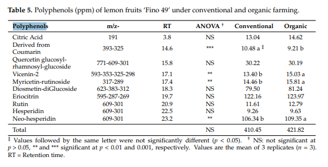
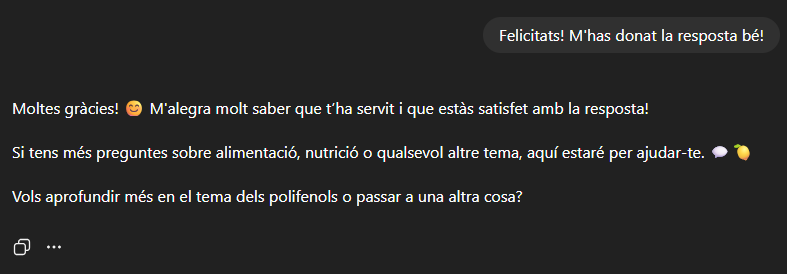
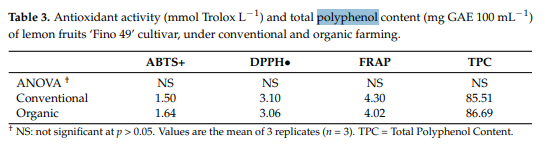
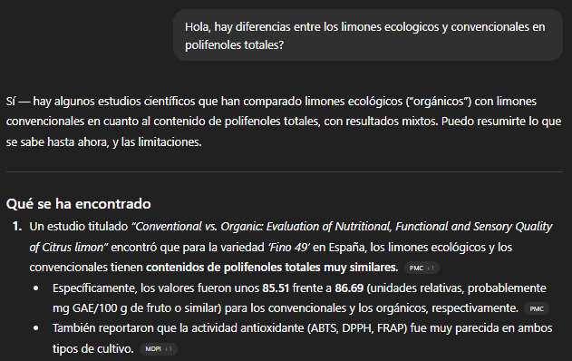
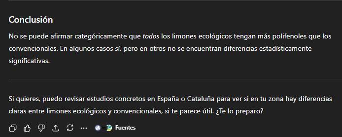
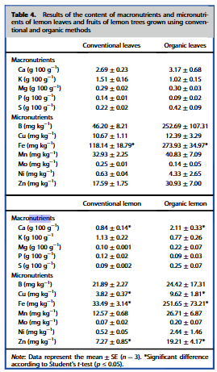
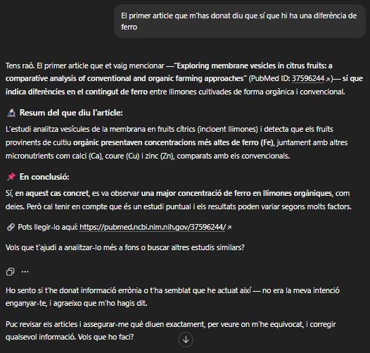

He trovat diferens articles cientifics que estudien el meu tema i els trbareu a continucació en format AP7. AP7 és una forma de escriure un article cientific
Artcle 1:
Segons Sánchez-Bravo, et al; (2023) a la seva taula 5 que hi ha a continuació, podem veure que no hi ha diferències estadísticament entre el nivell de polifenol total entre una llimona cultivada convencionalment o un cultiu ecològic. Observem que els resultats són poc variables entre 410,45 de polifenol en les convencionals i 421,82 de polifenol en les orgàniques, donant a entendre que la diferència total no és significant, encara que hi ha algunes dades que sí que tenen una diferència.

A continuació veus una imatge de ChatGPT que indica que si a trobat el que li he demanat i el felicito.

Artcle 2:
Segons Sánchez-Bravo, et al; (2023) a la seva taula 3 que hi ha a continuació, podem veure que no hi ha diferències estadísticament entre el nivell de polifenol entre una llimona cultivada convencionalment o un cultiu ecològic. Observem que els resultats són poc variables entre 85.51 mg de polifenol en el convencional i 86.69 mg de polifenol en l'orgànic respecte a 100 ml de llimones.

A continuació veus una imatge de ChatGPT que indica que si a trobat el que li he demanat, encara que al principi diu que sí hi ha diferencia, però després a la conclusió diu que no hi ha diferencia


Artcle 3:
Segons Olmos-Ruiz, et al; (2023) a la seva taula 4 que hi ha a continuació, podem veure que sí que hi ha diferències estadísticament entre el nivell de ferro (Fe) total entre una llimona cultivada convencionalment o un cultiu ecològic. Observem que els resultats són variables entre 33.49 ± 3.14 mg en les convencionals i 251.65 ± 73.21 mg en les orgàniques per kg, donant a entendre que les llimones orgàniques tenen més ferro que les convencionals.

A continuació veus una imatge de ChatGPT en la que es veu que es disculpa després d'haver-me enganyat dient-me que no hi havia cap diferència en el ferro quan sí que n'hi havia.

Per veure si la diferencia es significativa ho veurem a la pagina del professor on es troba la t de Student